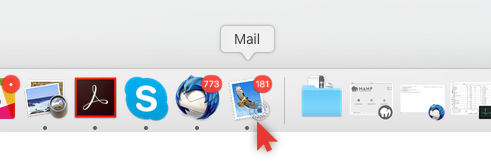
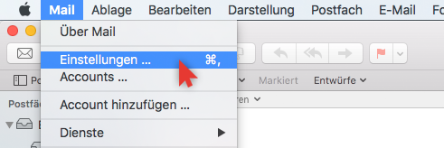
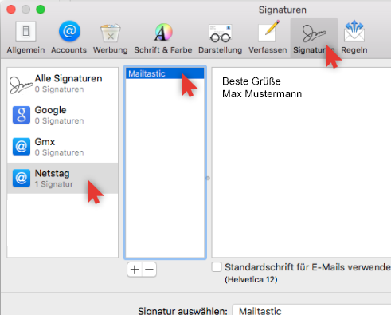
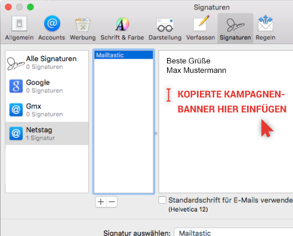
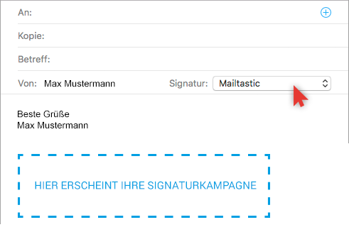

 <p class="zeitaufwand" translate="Exceptionalabout3minutes"></p>

 <p class="macmailsafariwarning" translate="CautionMozillaFirefoxbanner"></p>

<!--<p  class="schrift_blau text-bold">Sie möchten dennoch den Safari Browser benutzen ?</p>
  <div class="explain-step-text link text-underline" ng-click="setManual('macmailold')">Hier entlang...</div>

 -->
 
<!-- <p  class="schrift_blau text-bold">SCHRITT 1</p>
 <div class="explain-step-text">Kopieren Sie den Kampagnenbanner auf der rechten Seite.</div>-->
 
 
 
  <p  class="schrift_blau text-bold" translate="STEP1"></p>
 <div class="explain-step-text" translate="StarttheprogramMailonyourMac"></div>
 
 <div class="explain-step-text" translate="AndMailmenusettings"></div>
 
 
 <p  class="schrift_blau text-bold" translate="STEP2"></p>
 <div class="explain-step-text" translate="Clickthisemailaccounteasilycreatehereon"></div>
 
 
 
 
 <p  class="schrift_blau text-bold" translate="STEP4"></p>
 <div class="explain-step-text" translate="CopytheblueButtonstotheclipboard"></div>
 
 <button ng-click="selectSignature('preview')" class="ownbtn btnblau btn-lg installationcopybutton" translate="MailtasticCampaignBannertoclipboard"></button>
  
 <div class="explain-step-text" translate="UnlesstheContentsemptybox"></div>
 
  <div class="explain-step-text" translate="UnlesswithParagraphexistingsignaturetext"></div>
 
 <div class="explain-step-text">
     <span class="text-bold"><normal translate="Importantex"></normal></span> <normal translate="Ifyouonlywantleastyet"></normal>
 </div>
 
 
 
 
<p  class="schrift_blau text-bold" translate="STEP5"></p>
<div class="explain-step-text" translate="NowtheSelectCampaignbannersdisplayed"></div>

 